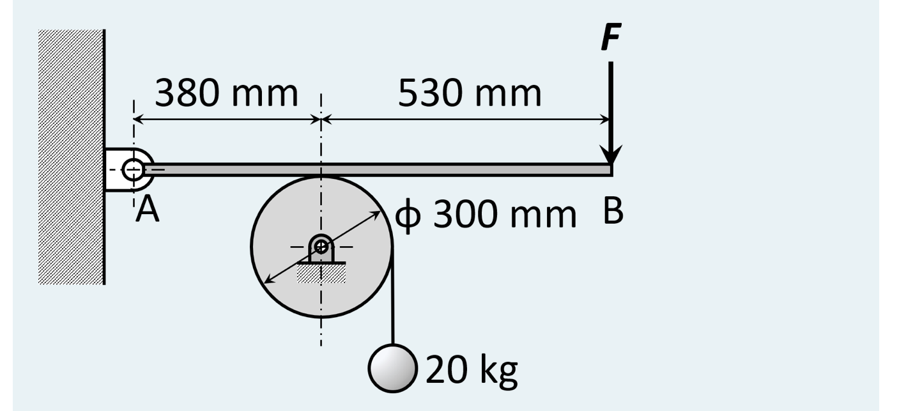
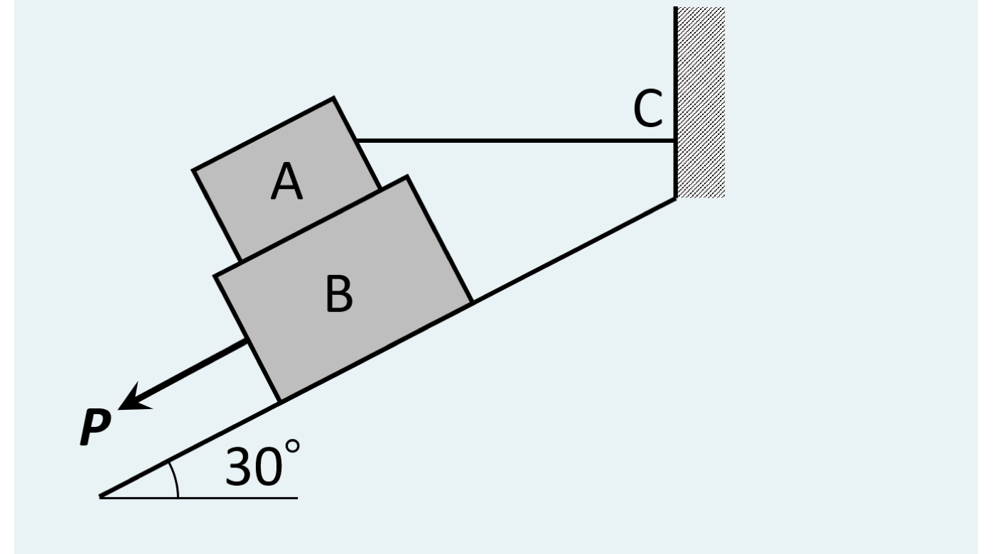
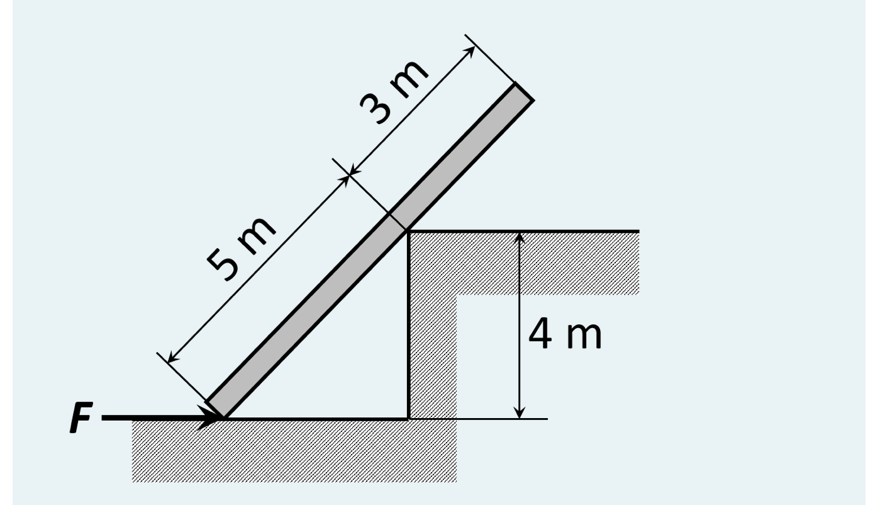

2026/10/22／第6回「摩擦力」の Moodle 小テスト（課題 6A〔必修〕全3問）。各問を、教材 第6回の道具（摩擦力は未知数・動き出す直前だけ $F=\mu N$）で、手順①〜⑥にそって解き直したもの。
必要であれば、重力加速度 $g=9.80\ \mathrm{m/s^2}$ を用いること。レバー AB の端点 B に垂直な力 $F$ を加え、質量 20 kg の物体が落下するのを防ぎたい。レバーと滑車の質量は無視できると仮定して、$F$ の最小値を求めなさい。レバーと滑車の間の摩擦係数は 0.25 である。

解答欄：$F$ [N]。
解答
① 系を2つに切る：滑車（中心は固定ピン）とレバー（A が回転ピン）。力の通り道は「おもり → ロープ → 滑車 → 摩擦 → レバー → $F$」で、摩擦が滑車の回転を止めている。$F$ が小さすぎると、摩擦が足りずに滑車が回ってしまう。
② 滑車の釣合い（回転軸のまわり）：おもりは静止しているので、ロープの張力は $$T=mg=20\times9.80=196\ \mathrm{N}$$ 滑車の半径を $r=0.150\ \mathrm{m}$ とする。ロープは滑車を回そうとするモーメント $Tr$ をかける。これを止めるのが、レバーとの接触点（半径 $r$ の位置）に働く摩擦 $f$ のモーメント $fr$。中心まわりのモーメントの釣合い $fr=Tr$ から $$f=T=196\ \mathrm{N}$$ （$r$ が両辺で約分されて消える。直径 300 mm は答えに効かない。中心のピンの反力 $N$・$f$ も中心を通るのでこの式に現れない。）
③ 摩擦の条件：滑らない（滑車が回らない）ためには $f\le\mu N$。最小の $F$ は、ちょうど滑り出す直前（等号）だから $$f=\mu N\quad\Longrightarrow\quad N=\frac{f}{\mu}=\frac{196}{0.25}=784\ \mathrm{N}$$ （摩擦の向き：ロープが右側に垂れるので滑車は時計回りに回ろうとする。接触点＝上端は右に動こうとするので、滑車が受ける摩擦は左向き、レバーが受ける摩擦は右向き。）
④ レバーの釣合い（A のまわりのモーメント）：レバーに働く力は、A の反力（A を通るので入らない）、接触点で滑車から受ける垂直力 $N$（上向き、A から 0.380 m）、摩擦 $f$（水平、レバーの線上なので A まわりのモーメントは 0）、B の $F$（下向き、A から $0.380+0.530=0.910$ m）。 $$F\times0.910=N\times0.380$$
⑤ 解く： $$F=N\cdot\frac{0.380}{0.910}=784\times0.41758=327.4\ \mathrm{N}$$ ⑥ 確かめ：(i) てこの向き：$F$ の腕（910 mm）が $N$ の腕（380 mm）より長いので $F\lt N$ ✓。 (ii) 「最小」の意味：$F$ を増やすと $N$ が増え、摩擦の上限 $\mu N$ が増えて、滑車は止まる（$F$ が 327 N より小さいと $\mu N\lt196$ で滑車が回り、おもりが落ちる）✓。 (iii) 単位：$mg$ [N]、$\mu$ は無次元、長さの比は無次元で、答えは N ✓。
答え：$F\approx327\ \mathrm{N}$（$g=9.80$ のとき 327.4 N）
Block A of 60-N weight rests on block B of 80-N weight. Block B is on the slope inclined 30° from horizontal. Block A is restrained from moving by a horizontal wire connected to the wall at point C. Determine the necessary force P parallel to the slope to start B down the slope. The coefficient of friction for all surfaces are 0.333.
（重さ 60 N のブロック A が、重さ 80 N のブロック B の上にある。B は水平から 30° の斜面上にある。A は壁の点 C につながれた水平な針金で動かないように押さえられている。B を斜面の下向きに動かし始めるのに必要な、斜面に平行な力 $P$ を求めなさい。すべての面の摩擦係数は 0.333。）

解答欄：$P$ [N]。
解答
① どこが滑るかを決める：B が斜面を下るとき、A は針金で止められているので動かない（B が下に動くと A は左へ引かれ、針金がぴんと張る）。したがって A–B の面も B–斜面の面も両方滑る。滑る面は上限 $f=\mu N$ で、向きは相手に対する動きの逆：
② 軸：斜面に沿って上向きを $u$、斜面に垂直で上向きを $n$ とする（$\theta=30^\circ$、$\cos30^\circ=0.8660$、$\sin30^\circ=0.5000$）。重さ $W$ の成分は $u$ 方向に $-W\sin\theta$、$n$ 方向に $-W\cos\theta$。水平な針金の張力 $T$（右向き）は、$u$ 方向に $T\cos\theta$、$n$ 方向に $-T\sin\theta$（右向きの水平は、斜面の上り向きの成分と、斜面にめり込む向きの成分に分かれる）。
③ ブロック A の釣合い（$W_A=60$ N）： $$n\text{ 方向}:\ N_1-T\sin\theta-W_A\cos\theta=0\ \Longrightarrow\ N_1=W_A\cos\theta+T\sin\theta$$ $$u\text{ 方向}:\ T\cos\theta-W_A\sin\theta-f_1=0,\quad f_1=\mu N_1$$ $N_1$ を代入して $T$ だけの式にする： $$T\cos\theta=W_A\sin\theta+\mu\,(W_A\cos\theta+T\sin\theta)$$ $$T\,(\cos\theta-\mu\sin\theta)=W_A\,(\sin\theta+\mu\cos\theta)$$ $$T=60\times\frac{0.5000+0.333\times0.8660}{0.8660-0.333\times0.5000}=60\times\frac{0.7884}{0.6995}=67.6\ \mathrm{N}$$ $$N_1=60\times0.8660+67.6\times0.5000=85.8\ \mathrm{N},\qquad f_1=\mu N_1=0.333\times85.8=28.6\ \mathrm{N}$$ ④ ブロック B の釣合い（$W_B=80$ N）：B には A から $N_1$（斜面にめり込む向き）と $f_1$（上向き）が作用・反作用でかかる。 $$n\text{ 方向}:\ N_2-N_1-W_B\cos\theta=0\ \Longrightarrow\ N_2=85.8+80\times0.8660=155.1\ \mathrm{N}$$ $$f_2=\mu N_2=0.333\times155.1=51.6\ \mathrm{N}$$ $$u\text{ 方向}:\ -P-W_B\sin\theta+f_1+f_2=0$$ ⑤ 解く： $$P=f_1+f_2-W_B\sin\theta=28.6+51.6-80\times0.5000=40.2\ \mathrm{N}$$ ⑥ 確かめ：(i) $P$ が正：B の重さの斜面成分（40 N）だけでは、摩擦の上限（$f_1+f_2=80.2$ N）に勝てず B は動かない。だから下向きの $P$ が必要 ✓。 (ii) 張力が正：$T=67.6\ \mathrm{N}gt0$ で、針金がぴんと張っている仮定と合う ✓。 (iii) 垂直力が正：$N_1,N_2gt0$ ✓。 (iv) 摩擦係数 1/3 で計算し直すと 40.3 N で、40.2 N とほぼ同じ（係数の丸めの違い）✓。
答え：$P\approx40.2\ \mathrm{N}$
必要であれば、重力加速度 $g=9.80\ \mathrm{m/s^2}$ を用いること。この一様な棒を動かすのに必要な右向きの力 $F$ の大きさを求めなさい。棒の質量は 35 kg で、すべての表面との摩擦係数は 0.3 である。

解答欄：$F$ [N]。
解答
① 形と動きを読む：棒の全長は $5+3=8$ m。下端 O から角 C までが 5 m、角の高さが 4 m なので、棒の傾き $\theta$ は
$$\sin\theta=\frac45,\qquad\cos\theta=\frac35\qquad(\text{3–4–5 の直角三角形で、水平距離は 3 m})$$
（図は縮尺が正確でないので、書かれた数値 5 m と 4 m を採用した。）
一様な棒の重心は中点で、O から 4 m の位置。重さ $W=35\times9.80=343\ \mathrm{N}$。
動き方：$F$ で下端が床の上を右へ動くと、棒は角 C の上を棒の長手方向に滑り上がる（下端が角に近づくので棒は起き上がる）。つまり床との接触点と角との接触点の両方で滑る（片方だけ滑って片方は止まる、ということは形の上でできない）。したがって両方で $f=\mu N$。向きは、下端の床の摩擦は左向き、角の摩擦は棒に沿って下向き（O の方向）。
② 軸と方向ベクトル：水平右を $x$、鉛直上を $y$。棒の向き（上向き）の単位ベクトルを $\boldsymbol{u}=(\tfrac35,\tfrac45)$、棒に垂直で左上向きを $\boldsymbol{n}=(-\tfrac45,\tfrac35)$ とする。
③ 力を成分で書く：角の力 $=N_c\boldsymbol{n}-\mu N_c\boldsymbol{u}$（$\mu=0.3$）： $$x:\ -N_c\Big(\tfrac45+0.3\times\tfrac35\Big)=-0.98\,N_c,\qquad y:\ N_c\Big(\tfrac35-0.3\times\tfrac45\Big)=0.36\,N_c$$ ④ 釣合い式：未知数は $F,\ N_f,\ N_c$ の3つ。O のまわりのモーメントを先に使うと $F,N_f,\mu N_f$ が全部消える（O を通る力）。角の摩擦も棒に沿う（O を通る線上）ので消える： $$5\,N_c-4\cos\theta\cdot W=0\ \Longrightarrow\ N_c=\frac{4\times0.6\times343}{5}=164.6\ \mathrm{N}$$ （O から C までの 5 m が $N_c$ の腕、O から重心までの水平距離 $4\cos\theta=2.4$ m が $W$ の腕。） 続いて力の釣合い： $$y\text{ 方向}:\ N_f+0.36\,N_c-W=0\ \Longrightarrow\ N_f=343-0.36\times164.6=283.7\ \mathrm{N}$$ $$x\text{ 方向}:\ F-\mu N_f-0.98\,N_c=0\ \Longrightarrow\ F=0.3\times283.7+0.98\times164.6$$ ⑤ 解く： $$F=85.1+161.3=246.5\ \mathrm{N}$$ ⑥ 確かめ：(i) 摩擦がない場合との比較：$\mu=0$ なら $F=N_c\sin\theta=164.6\times0.8=131.7$ N。摩擦があるので大きくなって 246 N（約 1.9 倍）✓（足元と角、2か所で抵抗する）。 (ii) 垂直力が正：$N_f=283.7gt0$、$N_c=164.6gt0$ で、足元も角も離れていない ✓。 (iii) 数値のチェック：連立方程式を Python で解いても同じ（246.47 N）✓。 (iv) 摩擦の向き：$F$ は右向きなので足元は右へ動こうとし、床の摩擦は左向き（$F$ に逆らう向き）✓。
答え：$F\approx246\ \mathrm{N}$（$g=9.80$ のとき 246.5 N）